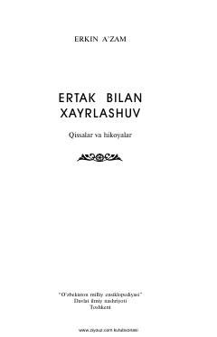

EBTaniqli o'zbek yozuvchisi Erkin Aʼzam qalamiga mansub ta'sirli asar.
Ushbu kitob taniqli o'zbek yozuvchisi Erkin Aʼzamning sara asarlaridan biri bo'lib, inson taqdiri, hayotiy ziddiyatlar va ma'naviy izlanishlarni o'z ichiga oladi. Asar o'quvchini chuqur o'ylantiruvchi voqealar va ta'sirli obrazlar olamiga yetaklaydi.